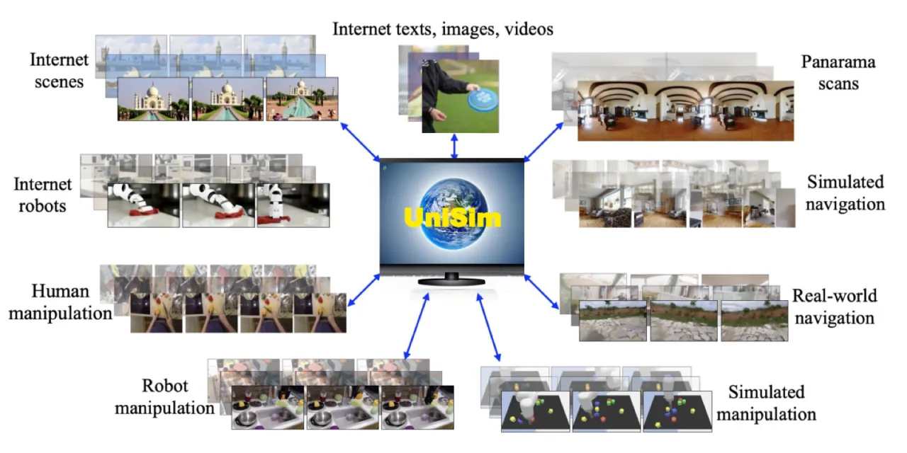
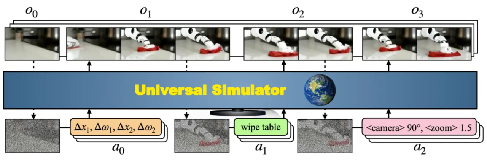
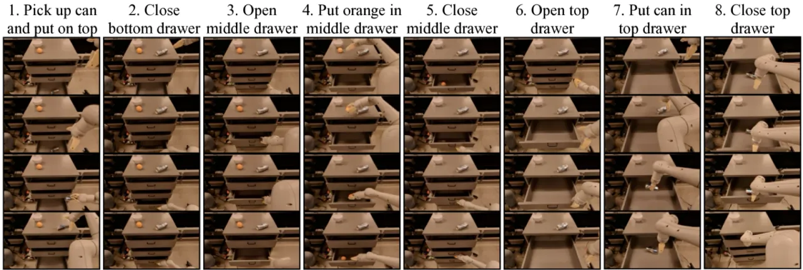
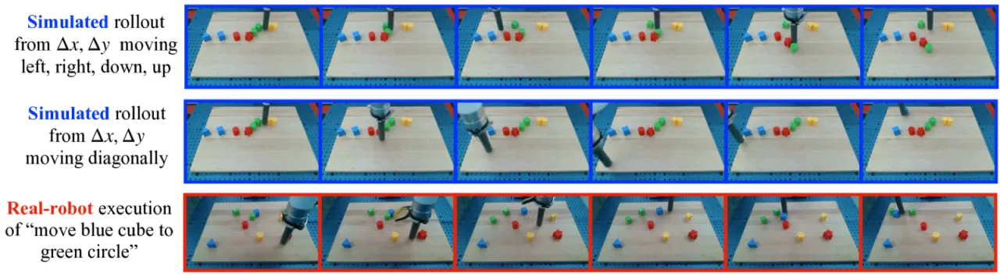

生成模型已在文本、图像和视频创作上取得突破。UniSim 迈向下一个里程碑：学习一个通用真实世界仿真器， 能够根据人类、机器人及其他智能体的动作，生成逼真的交互式观测序列。 通过统一整合多源异构数据集，UniSim 支持从高层语言指令到底层连续控制的全部动作类型， 并能以零样本方式将在仿真中训练的策略迁移至真实机器人。
训练现实的交互式仿真器是机器人和智能体研究的核心挑战。 传统仿真器（MuJoCo、Isaac Gym 等）依赖手工设计的物理引擎， 难以捕捉真实世界的视觉多样性与复杂交互； 而已有的视频预测方法通常局限于单一场景或特定动作类型。 能否用互联网规模的多源数据训练出一个通用的、 支持多种动作接口的真实世界仿真器？
"We explore the possibility of learning a universal simulator (UniSim) of real-world interaction through generative modeling."

UniSim 将真实世界仿真器形式化为一个观测预测模型： 给定历史观测帧 ht-1 和动作 at-1， 预测下一帧观测 ot。 核心创新在于通过数据编排策略，将多源异构数据统一到同一视频扩散框架下联合训练。

不同数据集的动作空间差异巨大——机器人数据有连续控制量，人类活动视频仅有文字标签， 全景扫描只有相机移动参数。UniSim 对每类数据采用专门的动作表示方式：
模型为 5.6B 参数 Video U-Net，包含交织的时序与空间 attention 层及卷积层。 训练目标为 MSE 去噪损失，采用 classifier-free guidance：
εθ = (1 + η) εθ(conditional) − η εθ(unconditional)
推理阶段通过自回归滚动（autoregressive rollout）生成长时序视频： 将已生成帧作为下一步历史条件，反复迭代，支持数十步以上的连续交互仿真。 历史帧采用最近 4 帧（而非单帧或远期帧），在消融实验中取得最优 FVD。
实验从三个维度验证 UniSim 的价值： (1) 作为视觉语言策略（VLM Policy）的训练环境； (2) 作为强化学习（RL）训练环境； (3) 为视频描述（Video Captioning）任务生成合成数据。 仿真质量用 FVD（Fréchet Video Distance）和 CLIP 相似度评估； 下游任务用任务特定指标评估。
| 历史条件 | FID ↓ | FVD ↓ | IS ↑ | CLIP ↑ |
|---|---|---|---|---|
| 单帧（1 frame） | 59.47 | 315.69 | 3.03 | 22.55 |
| 4帧·远期（4 distant frames） | 34.89 | 237.0 | 3.43 | 22.62 |
| 4帧·近期（4 recent frames） | 34.63 | 211.3 | 3.52 | 22.63 |
| 方法 | RDG (moved objects) ↑ | RDG (all objects) ↑ |
|---|---|---|
| VLM-BC（基线） | 0.11 ± 0.13 | 0.07 ± 0.11 |
| Simulator-Hindsight（UniSim 仿真训练） | 0.34 ± 0.13 | 0.34 ± 0.13 |
RDG（Reduction in Distance to Goal）越高越好；UniSim 仿真训练的策略在 Language Table 任务上显著优于行为克隆基线。
| 方法 | 指向任务成功率 ↑ | 抓取任务成功率 ↑ |
|---|---|---|
| Behavioral Cloning（基线） | 12% | 58% |
| Simulator-RL（UniSim 仿真 RL 训练） | 71% | 81% |
通过在 UniSim 仿真环境中进行 RL 训练，策略成功率大幅超越行为克隆基线，且训练所得策略可零样本迁移至真实机器人部署。
| 数据来源 | ActivityNet CIDEr ↑ | VATEX CIDEr ↑ | SMIT CIDEr ↑ |
|---|---|---|---|
| 无微调（基线） | 15.2 | — | — |
| 仿真数据微调（UniSim） | 46.23 | 27.63 | 40.03 |
| 真实数据微调 | 54.90 | — | — |
使用 UniSim 生成的合成视频微调视频描述模型，ActivityNet CIDEr 从 15.2 提升至 46.23，并对未见数据集（VATEX、SMIT）展现出更好的跨域泛化能力。


| 数据配置 | FVD ↓ | CLIP ↑ |
|---|---|---|
| 仅互联网数据 | 219.62 | 22.27 |
| 无互联网数据 | 307.80 | 21.99 |
| 全部数据（UniSim） | 211.30 | 22.63 |
| 模型规模 | FVD ↓ |
|---|---|
| 500M 参数 | 277.85 |
| 1.6B 参数 | 224.61 |
| 5.6B 参数（UniSim） | 211.30 |
随模型规模增大，FVD 持续下降，但增益逐渐收窄，表明还有提升空间。
当给定的动作对当前场景不合理时（例如对桌面机器人发出"wash hands"指令）， 仿真器会产生幻觉，生成不可能发生的视觉结果（如桌子变成水槽）。 原文："we observe hallucinations where the simulated outcomes may be unrealistic."
仿真器仅以最近几帧作为历史条件，无法捕捉长期物体持久性与场景状态。 例如，早期交互中移动过的物体在若干步后可能"复原"，违背物理一致性。 原文："cannot capture long-term memory."
对于训练数据中未覆盖的场景（如新型机器人形态），仿真质量显著下降。 原文："This is especially true for domains that are not represented in the training data."
UniSim 仅模拟视觉观测变化，无法仿真非视觉效应（力、声音、触觉反馈等）。 对于需要力控或触觉感知的任务，该仿真器不适用。 原文："Our simulator is not suitable for environments where actions do not cause visual observation change."